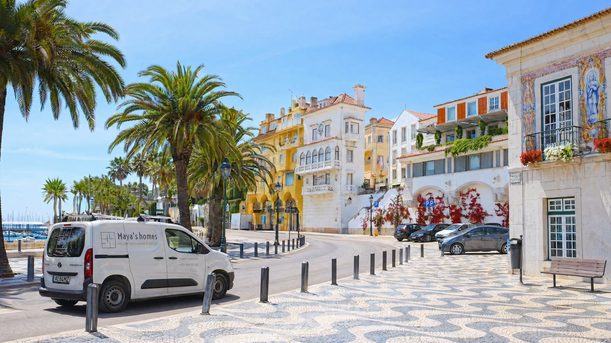
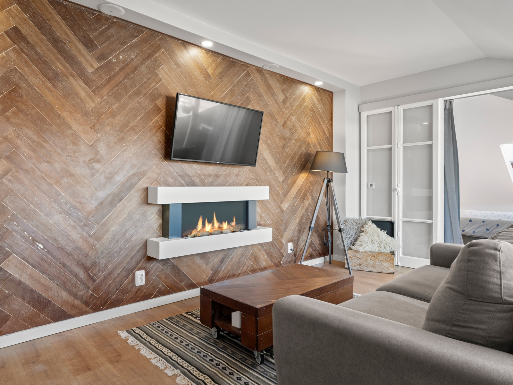
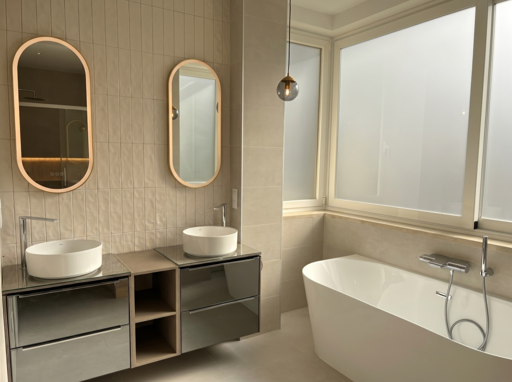
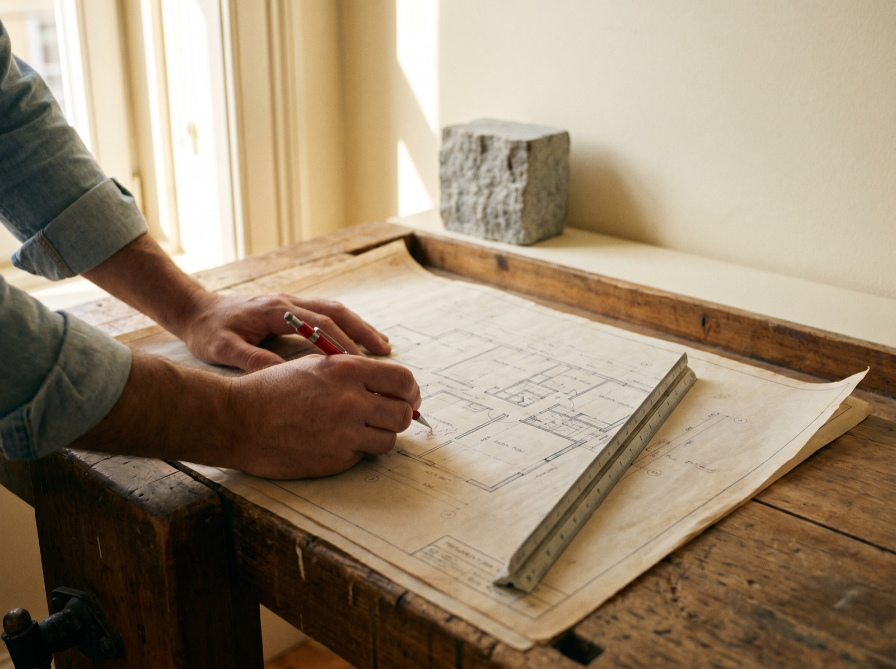
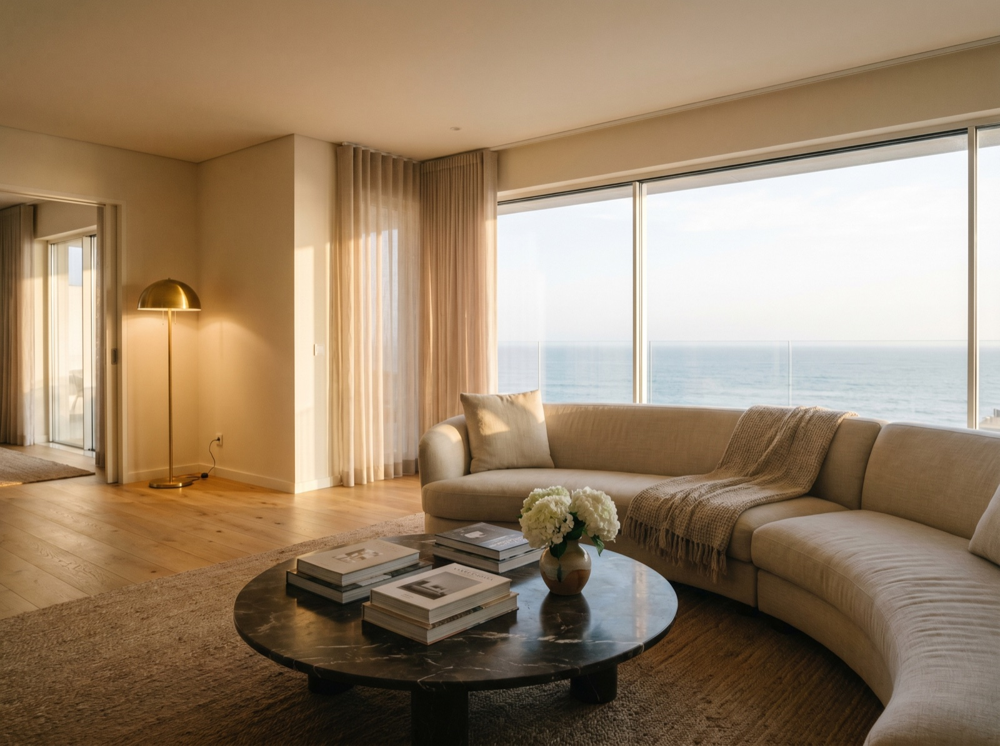
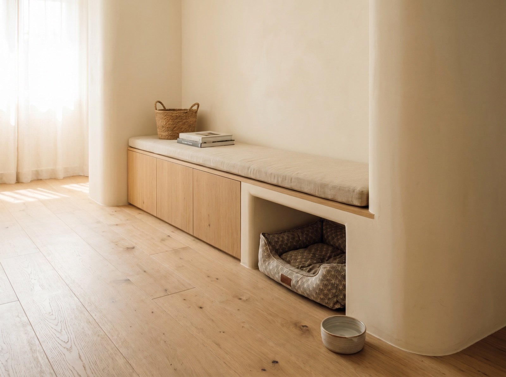
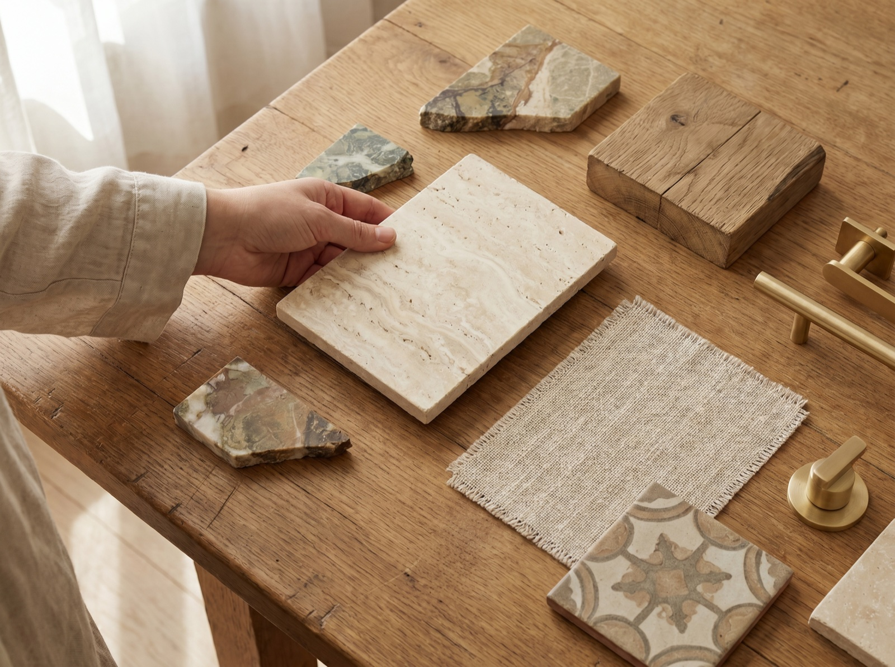

MAYA’S HOMES
All of your dreams
brought to life.
One Team. Zero Subcontractors.
Twenty-five Years.
— The Standard
Twenty-five years.
Ten people. One signature.
Maja signs every drawing. She walks the apartment with you. She specs the stone, the joinery, the fittings. She is on site every day until the keys turn.
Maya’s Homes doesn’t hire subcontractors. Every trade is on the studio’s payroll. The person who draws the plans is the person on the floor when the tile is laid. The home isn’t assembled. It’s considered.
- One signatureEvery drawing, every detail, held by one person from first sketch to final key.
- Ten in-houseCarpentry, electrics, masonry, plaster, plumbing — every trade your home needs is already inside the practice, on one payroll, never subcontracted.
- Seven languagesEN · PT · IT · FR · ES · DE · SL. No translators. Every word from Maja, in yours.
IMPIC Licensed · Alvará 97976‑PAR · AMI 18698
— The Approach
One hand.
One eye.
One signature.
The rooms Maja hands over feel composed because they were composed — by one person, from the first conversation to the final coat.
She draws the room. She specs the stone, the joinery, the fittings. She runs every trade in-house.
The result is an interior with a single voice, the way a great novel has a single author.
“Every renovation I run as if it were going to be mine. Which is why I’m on site every day.”
— Maja Milič
— The transformations
Six homes Maja wants to show you.
Each one Maja drew. Each one she was on, every day. Each one looks nothing like the room she walked into.
— In their words
From three continents. One pair of hands.
-
Maja is very reliable and responsible interior designer — she did an amazing job for me.
-
Maja takes a lot of pride in her work and always goes the extra mile to make sure everything’s done properly.
-
We absolutely loved working with Maja. She has an incredible eye for design, impeccable taste, and a real talent for colour.
— The Craft
100% in-house. Always.
The plumber, the joiner, the tiler, the electrician — every one of them works for Maja, and for Maja alone.
“Subcontracting would be easier and cheaper. It is also not how Maya’s Homes works — and never will. The precision and quality I promise cannot come from someone else’s hand.”
— Maja Milič

Drawn and laid. One hand.
Every craftsperson on a Maya’s Homes project has been with Maja for years. The team that builds your home is one she trusts with her own.

One number. The same names.
When something needs to change, you call Maja. The person who shows up is the same person who built the room — chosen by her, kept by her, known to her by name for years.

Maya’s Homes never really leaves.
A bulb in year three. A hinge in year five. The people who built your home are the people who maintain it — and Maja walks back through the door with them.
— How Maya’s Homes works
Four steps. One signature.
Every renovation runs the same way: a conversation, a drawing, a build, and a key.
-
Inspection. Maja walks the property with you and notes what stays, what changes.
01Week 0
The Conversation
A first meeting — no clipboards, no quotation. Maja walks the apartment with you, in your language, and listens. Every drawing starts here.
“I want to know how you live before I draw a line. We keep designing all the way to the keys.”
— Maja Milič -
Design. Every plan is drawn and rendered in 3D before a wall comes down.
02Weeks 1–3
The Drawing
Every wall, every fitting, every finish — drawn, rendered in 3D, and signed off before a tool is lifted. What you see on screen is what you’ll walk into. No surprise costs.
“We draw exactly how it’s going to be. Not a vision — a specification. Every line of it is yours.”
— Maja Milič -
The build. Demolition first, then back up to the finished core.
03Weeks 4–12
The Build
The studio’s craftspeople. One site. One foreman. Maya’s Homes moves in. Nobody else does. Weekly walk-throughs in your language. WhatsApp updates if you’re abroad. The render becomes a room.
“You can change a wall at any time. The build doesn’t close the design — it keeps the conversation going.”
— Maja Milič -
Handover. Full inspection, snags cleared, keys to a finished home.
04Final week
The Handover
A key on a polished countertop. The apartment is yours, ready to live in. Optional turnkey: furniture, lighting, and dressing included.
“And we stay on the call. A bulb in year three is still our problem.”
— Maja Milič
— Local mastery
A Cascais practice.

Where Maya’s Homes works.
Maya’s Homes is based in Cascais, but the studio’s work runs the corridor — from the Atlantic cliffs through Sintra and Estoril to the historic quarters of Lisbon. Below: where the studio works. Click through to see how Maja knows it.
Every Portuguese city builds differently. Cascais is not Sintra. Sintra is not Lisbon. The right renovation depends on where the house sits — what the law allows, what the climate demands, what the neighbours expect. Knowing the difference takes years.
Every project Maya’s Homes takes on sits inside this line. Cascais. Sintra. Lisbon. The towns between. Crews on site daily. Materials sourced locally. Maja in person on every brief.
Cascais. Sintra. Lisbon. Every Câmara Municipal has its own rules, its own rhythms, its own list of what it cares about. For someone who doesn’t know them, permitting is months of stress. Maya’s Homes has submitted in all of them.
Heating works best when the house holds it. The studio designs renovations that do — properly insulated walls, no infiltrations, no surprises years down the line. The bills stay low. The comfort stays high. Good insulation is rare. Water leaks are common, ignored until they can’t be. The studio traces every infiltration, seals every wall, targets a high energy rating. Through every Portuguese rain, Maya’s Homes’ houses have stayed dry inside.
“Cascais is not Sintra. Sintra is not Lisbon. The work that holds in one will fail in another.”
“Twenty years on this coast. I work nowhere else.”
“I’ve worked all across Lisbon. There is not one Câmara I don’t know how to work with.”
“In winter, my clients are in short sleeves. That’s the standard I build to.”
— Maja Milič
— What Maya’s Homes offers
The design is yours. The standard is ours.
Every renovation is shaped by the client — your taste, your way of living, the home you want. The build is shaped by Maya’s Homes. The studio uses only its own materials and trusted suppliers, because that’s the only way to guarantee how the work performs in year ten.

Full home renovations
Apartments, lofts, villas, restaurant-to-residence conversions. Every wall, every fitting, every finish drawn first, costed second, built third — by one team, with the studio’s own materials and trades.

Kitchens & bathrooms
The two rooms that decide whether a home feels considered. Custom joinery, hand-laid stone, fittings selected for salt-air longevity. Often commissioned alone, often the start of a fuller renovation.

Structural & permits
Walls moved. Beams added. Engineering signed and stamped. IMPIC, AMI, Cascais and Sintra preservation permits handled in-house, in your language.

Turnkey relocation
For clients buying in Cascais from abroad. Maya’s Homes finds the property, manages the purchase, then renovates, furnishes, and inspects — so the keys you receive open a home that’s already ready to live in.

Pet-friendly homes
Homes designed with the whole household in mind, including the pets. Durable finishes, integrated nooks, materials that won’t show daily wear — all woven into the design, not added on.

Innovative materials & imports
Sourcing beyond the local market when the project calls for it. Emerging finishes, imports of high-quality materials from abroad, technologies not yet widely available in Portugal — all vetted through the studio’s trades before any project sees them.
— Begin a project
Begin a project.
Tell Maja your vision.
A conversation, before a quotation. Maja replies personally — usually within the week.
Or reach her directly
- Email maja.milic@mayashomes.com
- WhatsApp +351 913 037 527
- Studio Alcabideche · Cascais · Portugal
Message sent.
Maja replies personally — usually within the week.